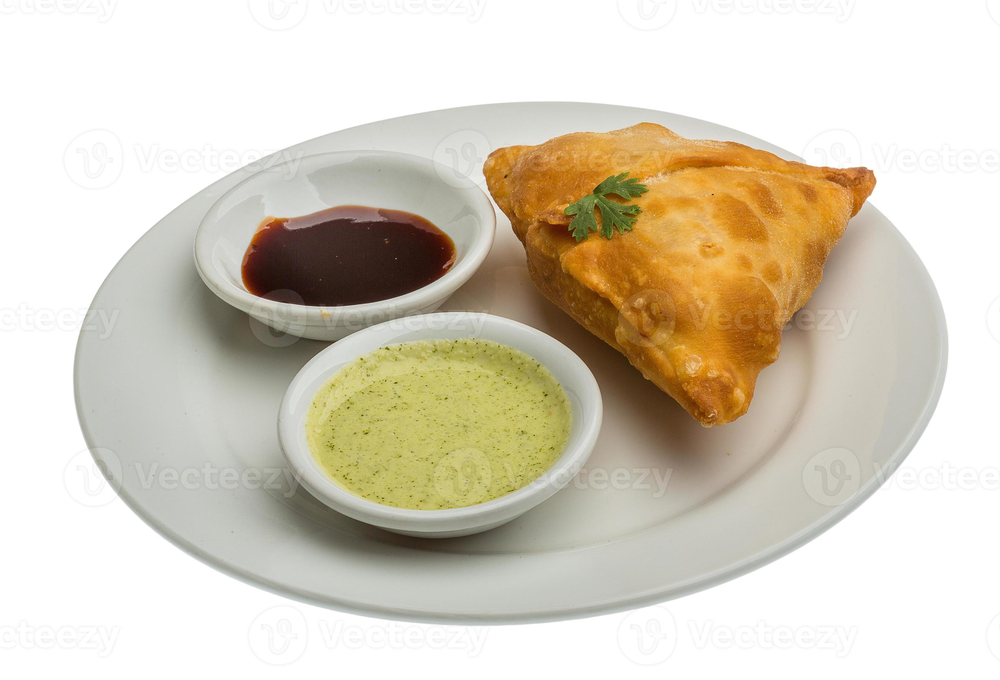

Samosa

Samosa is a fried or baked pastry with a savory filling, including ingredients such as spiced potatoes, onions, peas, and lentils.
It originated in the Middle East and was brought to India where it became highly popular.
Ingredients
- All-purpose flour
- Potatoes
- Peas
- Spices (cumin, coriander, garam masala)
- Oil
- Salt
Steps
- Mix flour, salt, and oil to make the dough
- Boil and mash potatoes, then mix with cooked peas and spices
- Divide dough into small balls and roll into circles
- Cut each circle in half to form semi-circles
- Fold into cone shape and fill with potato mixture
- Seal the edges with water
- Heat oil in a deep pan
- Fry samosas until golden brown
- Drain on paper towels
- Serve hot with chutney
Home